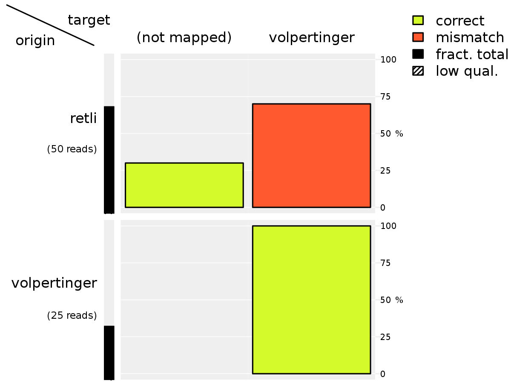

Parsing of SAM files
With the following tools, SAM files can be parsed to gain information of read names, where they were mapped, which quality score the mapping was assigned and so on.
The procedures in this chapter may vary more than the previous ones, depending on the research question.
In the setting this package was originally designed for, the names of the reads carry the information where the reads actually belong to. This information can subsequently be compared to the actual mapping information obtained from the SAM file.
Extraction of information
To use the information of the SAM file, convert it to a tabular form using the tool sam2table. This generates a table with column names adhering to the names defined in the SAM Specification, which are, amongst others:
- qname: Read name
- rname: FASTA record name of genome this read was mapped to.
*if not mapped. - pos: Base index of mapping position (1-based index!)
- mapq: Quality score assigned by the mapper
- cigar: CIGAR String: Information about gaps and mismatches in the alignment read -- reference
scripts/sam2table data/4/1.sam > data/5/1.tabShow beginning and end of the generated file:
head data/5/1.tab | column -ttail data/5/1.tab | column -tGather all information needed to determine correct mapping
To determine whether a read was mapped correctly, the mapping information like mapped position of the read in the target reference as well as the true read position must be known. The true read information was generated along with the read FASTQ files and was stored in .coord files.
The script add_mapped_organisms reads the mapping information stored in the SAM file (converted to a table) and the true read information and merges the information into one table.
Thereby, all information about one read is stored in the same line.
In this example, the organism volpertinger provides the endogenous reads as all reads were mapped only to the volpertinger genome. The retli reads are therefore exogenous reads, as these are not supposed to map to that reference genome.
To assign the correct organism names to the reads, the script must be provided with
The call is shown below. The script write_later at the end of the pipe is to prevent merge from overwriting its own input file too soon, as the output is meant to replace the input file.
scripts/add_mapped_organisms \
--endogenous volpertinger \
input/genome/volpertinger.fasta.fai \
data/2/volpertinger.coord \
--exogenous retli \
input/retli/retli.fasta.fai \
data/2/retli.coord \
data/5/1.tab \
| scripts/write_later data/5/1.tab
head data/5/1.tab | column -tNow all the information is present to determine whether a read has been mapped correctly. The last step is writing in a new column whether a read was mapped correctly. This can be archieved using any means you can imagine, for this example we will use R. The pocketR tool is a thin wrapper which handles reading and writing of data for us. The input data will be available as a data.frame called input. The R calls must return a data.frame, which will be printed as a table.
This step is exposed to the user, because this enables great flexibility in what exactly is considered a "correct" read mapping.
The following command adds a new column to the input data which indicates whether a read was mapped correctly. In this tutorial, "correct" is defined as "the read has been mapped exactly to the position from which it originated".
scripts/pocketR '
within(input, {
correct =
mapped_pos == true_start &
mapped_rname == true_record &
mapped_organism == true_organism })
' data/5/1.tab \
| scripts/write_later data/5/1.tab
head data/5/1.tab | column -tAs another example to perform the same step, below is shown how to allow for 5 bp of tolerance when determining whether the read was mapped correctly:
scripts/pocketR '
within(input, {
correct =
abs(mapped_pos - true_start) < 5 &
mapped_rname == true_record &
mapped_organism == true_organism })
' data/5/1.tab \
| scripts/write_later data/5/1.tabGrouping of reads
As next step, the number of reads are counted which belong to certain categories. Here, the categories are:
- Correctly mapped or not
- Origin organism
- Organism a read was mapped to
Again, the R language can be used to express our wishes concisely: Group the reads by all combinations of:
true_organismmapped_organism- correctly mapped
... and count the reads belonging to each category:
the cbind function is needed in order to rename the column containing the read count. qname can be substituted here by any valid input column name, as its only used for counting (each column is equal in length).
scripts/pocketR '
aggregate( cbind(count=qname) ~ true_organism + mapped_organism + correct,
FUN=length, data=input)
' data/5/1.tab \
> data/5/1.agg
cat data/5/1.agg | column -tThis format may be used to plot the read fate of a single mapper run and to derive the measures sensitivity and specificity:
scripts/plot_read_fate --exogenous retli \
--format png \
true_organism mapped_organism \
correct count \
fig/fate1.png data/5/1.aggThe script produces the following plot:

The plot shows, which fractions of the input species (endogenous: volpertinger, contaminant: R. etli) are mapped and whether the mapping was correct. It can be seen that in this case, almost no contaminant reads were mapped, indicating high mapper specificity. However, only 75% of the endogenous reads were mapped.
Sensitivity and specificity
- Sensitivity (recall) shows how many reads have been mapped correctly by the mapper which are supposed to map.
- Specificity (precision) shows how many reads have been correctly identified as non-endogenous and were therefore not mapped.
- Balanced control rate* (BCR) is the mean of sensitivity and specificity
If non-endogenous reads were included in the reads, like we did by including the R. etli reads, both measures can be calculated.
The following script needs the same kind of input as the plot-read-fate script. Additionally, a list of organisms must be specified, whose genomes the mapper used as a reference.
If you specify multiple organisms, separate them by commas and don't include any spaces.
scripts/sensspec --c-morg mapped_organism \
--c-torg true_organism \
data/5/1.agg volpertinger \
> data/5/1.performance
column -t data/5/1.performanceRepeat all steps for every SAM file
The code needed to evaluate the data generated by the mapper might as well be included in the mapping template script introduced in the last section. If this is done, the data evaluation can be as well parallelized as the mapping process.
All scripts used here were already introduced in this section.
The files data/5/all.tab and data/5/all.recids must be calculated prior to execution of this script. This has been done in this section as well.
Browse the directory data/5 to see the results.
for sam in data/4/*.sam; do
# Generate output prefix p from input name: `4.sam` -> `4`
bn=$(basename $sam)
p=${bn%.sam}
# Convert SAM to table
scripts/sam2table data/4/${p}.sam > data/5/${p}.tab
# Mark correctly/incorrectly mapped reads
scripts/add_mapped_organisms \
--endogenous volpertinger \
input/genome/volpertinger.fasta.fai \
data/2/volpertinger.coord \
--exogenous retli \
input/retli/retli.fasta.fai \
data/2/retli.coord \
data/5/${p}.tab \
| scripts/write_later data/5/${p}.tab
# Determine whether each read was correctly mapped
scripts/pocketR '
within(input, {
correct =
mapped_pos == true_start &
mapped_rname == true_record &
mapped_organism == true_organism })
' data/5/${p}.tab \
| scripts/write_later data/5/${p}.tab
# Count reads per origin/target organism and mapping status
scripts/pocketR '
aggregate( cbind(count=qname) ~ true_organism + mapped_organism + correct,
FUN=length, data=input) ' \
data/5/${p}.tab \
> data/5/${p}.agg
# Plot mapping targets per origin organism
scripts/plot_read_fate --exogenous retli \
--format png \
true_organism mapped_organism \
correct count \
fig/fate${p}.png data/5/${p}.agg
# Calculate sensitivity, specificity and balanced accuracy
scripts/sensspec --c-morg mapped_organism \
--c-torg true_organism \
data/5/${p}.agg volpertinger \
> data/5/${p}.performance
echo "$sam done. -> Generated data/5/${p}.{tab,agg,pdf,performance}"
donedata/4/*.sam done. -> Generated data/5/*.{tab,agg,pdf,performance}All generated images:
1.png:
2.png:

3.png:
4.png:
5.png:
